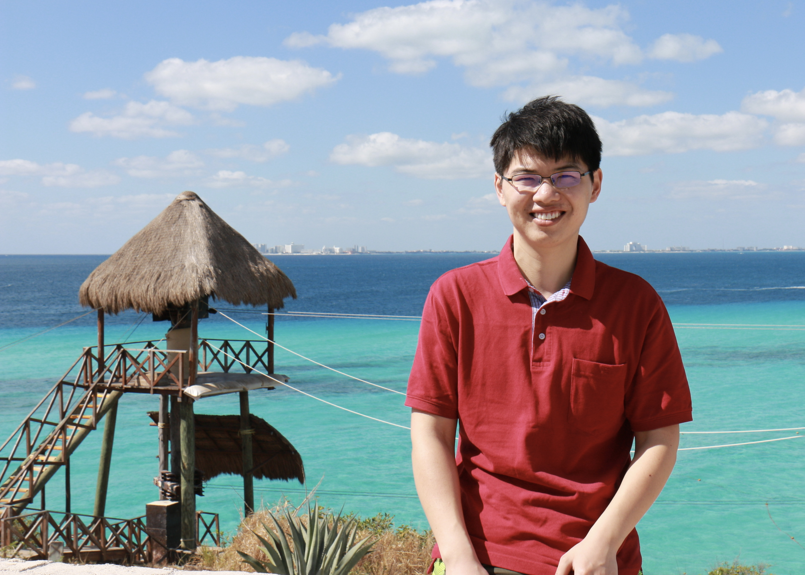

Cong Ma
|  | I am an assistant professor in the Department of Statistics at the University of Chicago. Previously, I was a postdoctoral researcher at UC Berkeley, advised by Professor Martin Wainwright. I obtained my Ph.D. at Princeton University in 2020, advised by Professor Yuxin Chen and Professor Jianqing Fan. Prior to the graduate school, I received my bachelor's degree in Electrical Engineering from Tsinghua University in 2015. E-mail: congm [@] uchicago [DOT] edu
|
News
Our paper on nonconvex statistical optimization has been selected for the 2024 SIAM Activity Group on Imaging Science Best Paper Prize.
A new paper on bandits: Batched Nonparametric Contextual Bandits.
A new paper on ranking: Top-
 Ranking with a Monotone Adversary.
Ranking with a Monotone Adversary.
A new paper on the suboptimality of the Lasso estimator: On the Design-Dependent Suboptimality of the Lasso.
Our paper on covariate shift Maximum Likelihood Estimation is All You Need for Well-Specified Covariate Shift has been accepted to ICLR 2024.